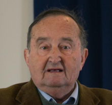

Pri la stato de nia klubo
Oni ofte aŭdas, ke lokaj esperanto-kluboj ne plu utilas post invento de la reto, ke
ili estas restaĵo de la pasinta jarcento, kiam ankaŭ la politikaj partioj konsistis el serioj de
lokaj unuoj, kie oni debatis pri politikaj problemoj kaj sendis sian reprezentanton al la
regiona kongreso, kiu sendis sian reprezentanton al la landa kongreso. Sed nun post la
televido kaj la interreto tiuj lokaj unuoj malaperis kaj nur kelkaj elituloj debatas pri politikaj
problemoj en la televido. Alivorte, la demokratio el la bazo supren ne plu ekzistas. Sed kio
pri Esperanto. Post la ekesto de retaj kursoj, oni fiere anoncis ke lokaj kursoj ne plu
okazos, kaj ke lokaj kunvenoj ne plu necesas, ĉar ĉiu kontaktos ĉiun mondskale, sed
tamen nur multaj malgrandaj kluboj en perditaj vilaĝoj emis malaperi. La kluboj en grandaj
urboj kaj ĉefe en ĉefurboj vivas kaj prosperas. Eĉ en Moskvo, kie pro granda amo al la
Esperanto-kulturo oni renkontiĝas por diskuti kaj kritiki aperintajn verkojn aŭ por aŭdi
recitadon de poemoj kaj samtempe te-umi. Certe oni povus trinki teon tute sola antaŭ sia
ekrano, sed tio estas io tre malpli plezurdona.
En Budapeŝto kunvenas pli ol unu loka
grupo; en Vieno aktivuloj de la loka klubo faris konsiderindan varban agadon ĉe la
universitato. Tiom sukcesa ĝi estis ke sekvis debato pri Esperanto en la universitato. Mi
povus daŭrigi per Romo, Parizo, Bruselo kaj Pekino.
Sed ni revenu al Londono, glor-plena
klubo fondita en 1903 kaj salutita de Zamenhof persone per voĉa mesaĝo en vaksa
cilindro, kiu tiam impresis ĉiujn per sia moderneco [vi parolas en Varsovio kaj oni aŭskultas
vin en Londono: frenezaĵo, speco de artefarita inteligento de tiu epoko]. En sia pli ol 120-jara ekzisto, ĝi organizis Universalajn Kongresojn, eldonis verkojn legatajn en la tuta
mondo. Mi nun pensas pri la londona Biblio. Ĝi, krome, estis la klubo de kelkaj prezidantoj
de UEA, sed ĝia plej alta punkto, laŭ mi, estis kiam ĝi insistis kunveni dum la bombado de
Londono dum la dua mond-milito. Se vi havas okazon, legu en la historio de nia klubo pri
la problemo reveni hejmen post la klub-kunveno pro la amaso da rifuĝintoj en la subteraj
stacioj de la subtera urba fervojo.
Kaj nun ĝi reinventis sin, adaptiĝis al la modernaj
tempoj kaj dum la pandemio komencis eksperimenti retan instruadon, kiu intertempe
vastiĝis kaj ampleksas lernantojn de Ĉinujo al Usono. Ĉiam dum tiu periodo de la
pandemio, ĝi reinventis siajn ĉiu-semajnajn prelegojn kaj kunlabore kun la klubo de
Antverpeno, kiu ankaŭ kunvenas vendrede, lanĉis programojn de retaj prelegoj, en kiuj
konataj esperantistoj parolas pri ĉio, ekde la problemoj de forigi rubojn ĝis prezento de la insulo
Reunio en Afriko aŭ artefarita inteligento. Post la pandemio ni ankaŭ reprenis niajn
ĉeestajn kunvenojn kaj niaj tradiciajn momentojn, kiaj estas la zamenhofa vespero, la
novjara festo, la komuna vespermanĝo kaj la komuna promeno, kaj nun ni eĉ havas novan
bulteniston, kiu komencas sian agadon per ĉi tiu numero de la Bulteno.
Bonan laboron al li kaj dankon al ĉiuj membroj pro la daŭra subteno kaj partopreno!
Via sekretario